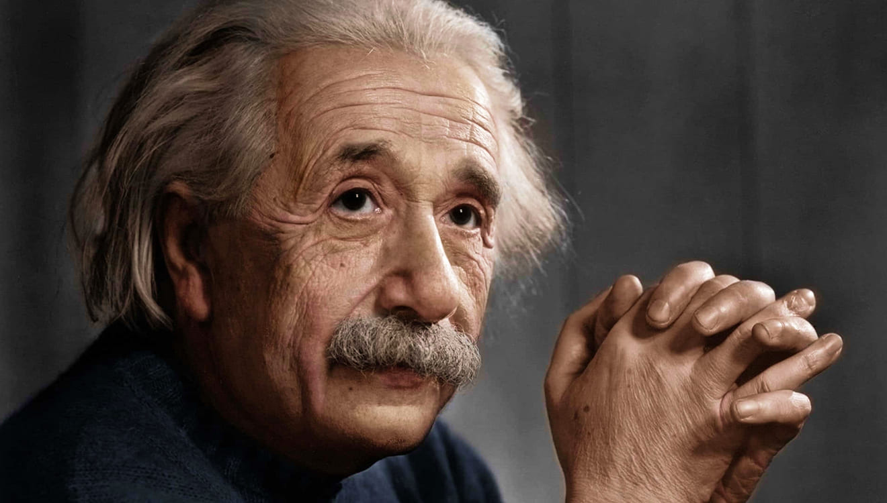
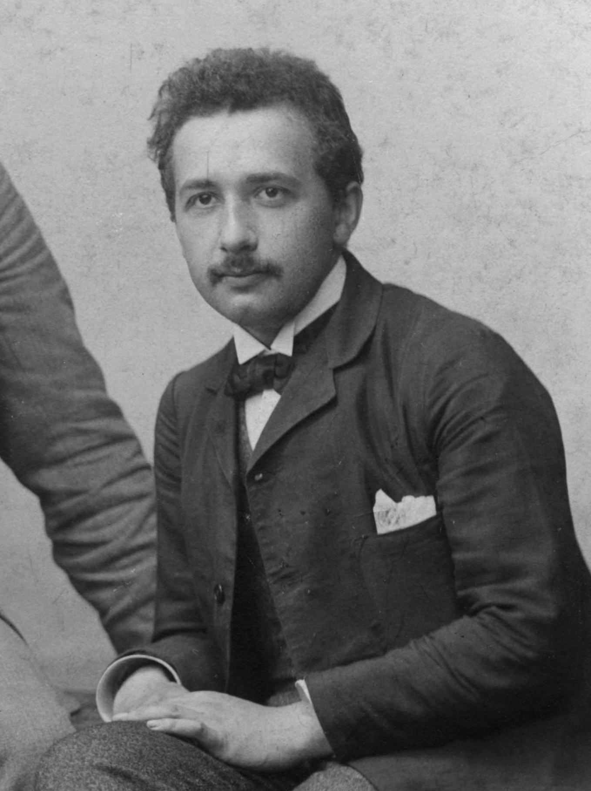
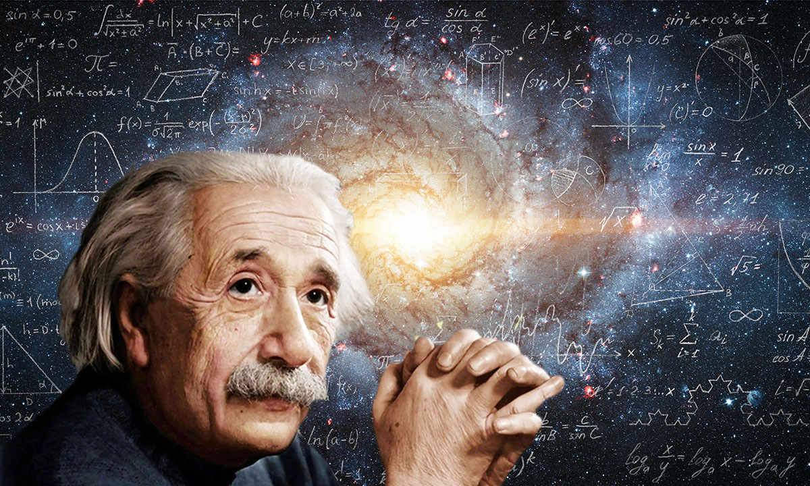
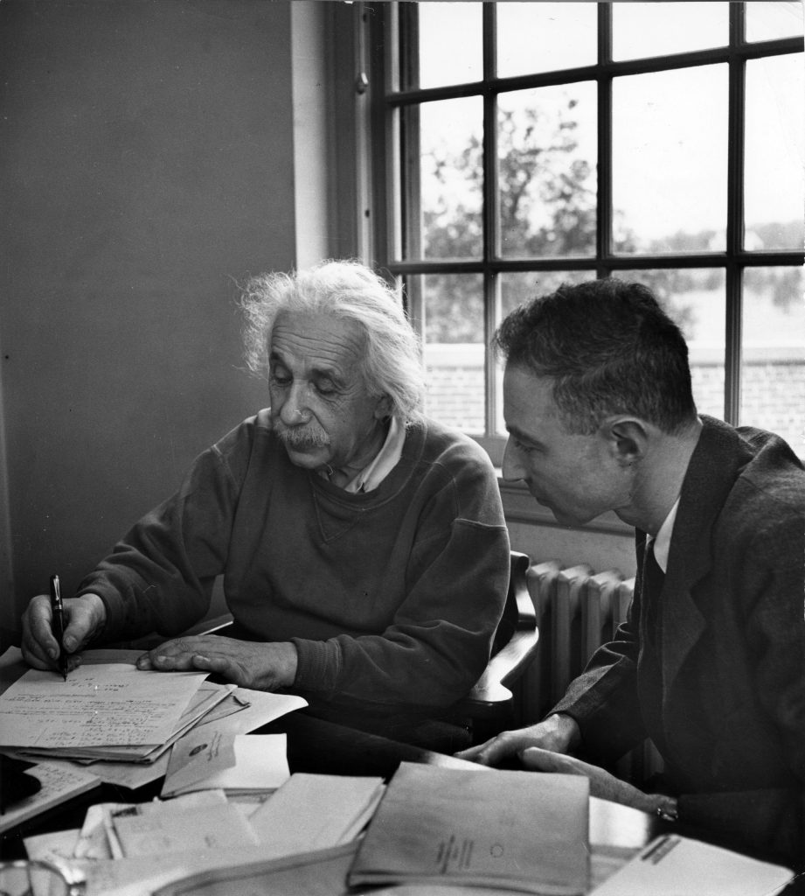
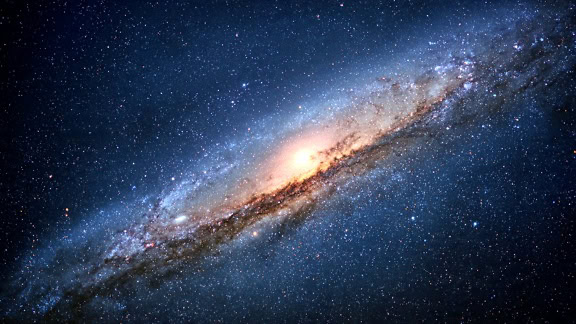

01
1879
Nacimiento
Albert Einstein nació el 14 de marzo de 1879 en Ulm, en el Reino de Wurtemberg, entonces parte del Imperio alemán.
VIDA · CIENCIA · LEGADO
La vida de uno de los científicos más influyentes de la historia y sus revolucionarias ideas sobre el espacio, el tiempo, la energía y el universo.
DESCUBRIR SU HISTORIA →
EL HOMBRE DETRÁS DE LA CIENCIA
Albert Einstein fue un físico alemán considerado uno de los científicos más importantes e influyentes de todos los tiempos.
Sus investigaciones transformaron nuestra comprensión del espacio, el tiempo, la gravedad y la relación entre materia y energía. Sus ideas dieron origen a una nueva manera de entender el universo.
Más allá de sus descubrimientos científicos, Einstein se convirtió en una figura cultural reconocida mundialmente por su curiosidad, pensamiento crítico y defensa del conocimiento.
EXPLORAR SUS DESCUBRIMIENTOS →La imaginación es más importante que el conocimiento.
— Albert EinsteinUNA VIDA EXTRAORDINARIA
Desde su infancia en Alemania hasta convertirse en una de las figuras científicas más reconocidas del siglo XX.
Albert Einstein nació el 14 de marzo de 1879 en Ulm, en el Reino de Wurtemberg, entonces parte del Imperio alemán.
Ingresó al Instituto Politécnico Federal de Zúrich, donde estudió matemáticas y física.
Publicó varios trabajos revolucionarios que cambiaron la física, incluyendo sus estudios sobre el efecto fotoeléctrico y la relatividad especial.
Presentó su teoría de la relatividad general, una nueva explicación de la gravedad basada en la geometría del espacio-tiempo.
Recibió el Premio Nobel de Física por su explicación del efecto fotoeléctrico y sus contribuciones a la física teórica.
Debido al ascenso del nazismo, Einstein abandonó Alemania y se estableció en Estados Unidos, donde continuó trabajando científicamente.

SU FORMACIÓN
Desde pequeño, Einstein mostró interés por comprender cómo funcionaba el mundo. La curiosidad y la capacidad de cuestionar las ideas establecidas fueron elementos fundamentales de su pensamiento.
Durante sus años de formación desarrolló una profunda relación con las matemáticas y la física. Sin embargo, también tuvo dificultades dentro de los sistemas educativos tradicionales.
SUS GRANDES CONTRIBUCIONES
Las investigaciones de Einstein modificaron profundamente conceptos que durante siglos parecían inmutables.
Einstein explicó cómo la luz puede comportarse como paquetes discretos de energía llamados fotones. Este trabajo fue fundamental para el desarrollo de la física cuántica.
Su teoría de 1905 mostró que las mediciones de espacio y tiempo dependen del estado de movimiento del observador y estableció una nueva relación entre ambos conceptos.
Einstein describió la gravedad como una consecuencia de la curvatura del espacio-tiempo causada por la materia y la energía.
Sus trabajos ayudaron a proporcionar evidencia teórica para la existencia de átomos y moléculas, explicando el movimiento aleatorio observado en pequeñas partículas.
La famosa ecuación E = mc² expresa la equivalencia entre masa y energía y se convirtió en una de las ecuaciones más conocidas de la ciencia.
Sus ecuaciones de la relatividad general también tuvieron importantes consecuencias para estudiar la estructura y evolución del universo.
LA ECUACIÓN MÁS FAMOSA
Una pequeña ecuación con enormes consecuencias.
La ecuación muestra que la masa puede considerarse una forma de energía y que una pequeña cantidad de masa puede corresponder a una enorme cantidad de energía debido al valor extremadamente grande de la velocidad de la luz.

MÁS ALLÁ DE E = MC²
Einstein no se limitó a resolver problemas existentes. Una de sus mayores contribuciones fue cuestionar conceptos que parecían evidentes y buscar nuevas formas de explicar la naturaleza.
Su pensamiento combinaba imaginación, razonamiento matemático y experimentos mentales. Esta forma de trabajar le permitió explorar situaciones que no podían observarse directamente.

1879 — 1955
Albert Einstein nace el 14 de marzo en el Reino de Wurtemberg.
Ingresa al Instituto Politécnico Federal de Zúrich para estudiar matemáticas y física.
Publica trabajos sobre el efecto fotoeléctrico, el movimiento browniano y la relatividad especial.
Presenta la teoría que redefine la comprensión científica de la gravedad.
Es reconocido por su explicación del efecto fotoeléctrico.
Abandona Alemania y comienza una nueva etapa de su vida en Estados Unidos.
Einstein muere el 18 de abril en Princeton, Nueva Jersey, a los 76 años.
SU IMPACTO
Las ideas de Einstein continúan formando parte de la ciencia moderna y de nuestra cultura.

Sus teorías cambiaron profundamente la manera de estudiar el universo.
Sus ideas tienen aplicaciones indirectas en tecnologías modernas y sistemas científicos.
Einstein se convirtió en un símbolo mundial de inteligencia, creatividad y curiosidad.
Su vida continúa inspirando a generaciones de estudiantes, investigadores y científicos.

PENSAMIENTO
La imaginación es más importante que el conocimiento.Albert Einstein
PARA CONOCERLO MEJOR
Einstein tocaba el violín y consideraba la música una parte importante de su vida.
Prefería cuestionar las ideas establecidas antes que aceptarlas simplemente por tradición.
Utilizaba experimentos mentales para imaginar situaciones físicas difíciles de observar directamente.
Su imagen se convirtió en una representación popular del científico y del pensamiento intelectual.